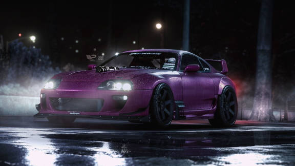
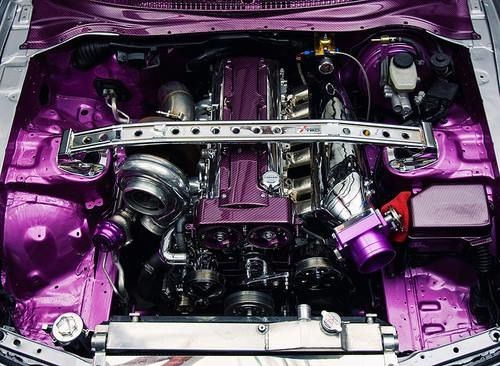
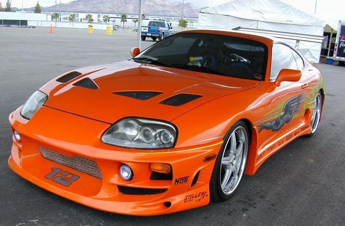
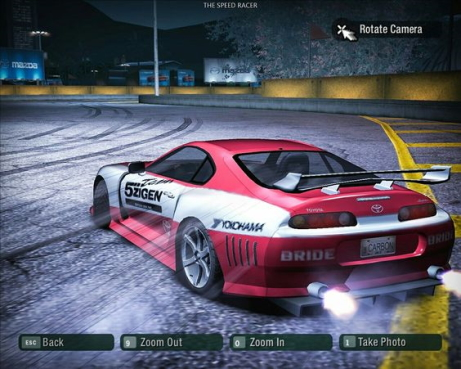

Sobre Toyota Supra
Toyota Supra é o melhor carro japones para drift, hally, corridas de drag, além de ser um carro extremanente lindo quando tunado.

Com consumo médio de 11 litros/100km, 0 aos 100 km/h em 5.1 segundos, velocidade máxima de 250 km/h, um peso de 1615 kgs, o Supra IV 3.0i Turbo está equipado com um motor Em linha de 6 cilindros turbocompressor, a Gasolina, com o código de motor 2JZ-GTE.
Este motor produz uma potência máxima de 330 CV às 5600 rotações e um torque máximo de 441 Nm às 4800 rotações. A potência é transmitida à estrada através de um câmbio Manual de 6 marchas, e o tipo de tração é traseira (RWD).
Quanto às caracteristicas do chassis, responsáveis pelo comportamento em curva e conforto, o Supra IV tem suspensão dianteira do tipo Independent. Double Wishbones. coil springs. anti-roll bar e suspensão traseira do tipo Multilink. Coil springs. anti-roll bar. As medidas de pneus são 235 / 45 em jantes de 17 polegadas à frente e 255 / 40 em jantes de 17 polegadas atrás. Na travagem, o sistema de travões do Supra IV 3.0i Turbo tem Discos Ventilados à frente e Discos Ventilados na traseira.
O modelo Supra IV é um carro do tipo produzido pelo fabricante Toyota, vendido a partir do ano 1993 até 1997.

Muita gente lembra do clássico racha entre Brian O'Conner (Paul Walker) e Dominic Toretto (Vin Diesel) no final do primeiro Velozes e Furiosos, com uma vitória milimétrica do icônico Toyota Supra 1994 laranja. Além de ter uma participação em vários jogos de corrida como os da franquia de Need for Speed (NFSU1, NFSU2, NFSU shift, NFSU carbon, etc..)
 
Todas as imagens foram retiradas do pinterest. Sem direitos autorais.